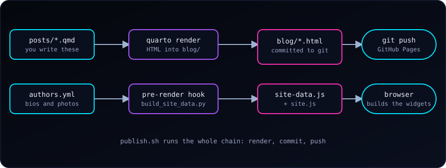

This blog is plain files: Markdown in, HTML out, hosted for free on GitHub Pages. There is no server and no database, yet it has a sidebar archive, a tag cloud, related posts, author pages, a light/dark switch, and a one-command publish. Here is how it fits together, so we can borrow whatever is useful.
The Idea: Sources In, Built Site Out
Quarto turns .qmd files into HTML. GitHub Pages serves whatever is committed. So we keep two folders side by side:
blograw/ # sources (what we edit)
_quarto.yml # project config
posts/*.qmd # one file per post
styles.css, site.js, authors.yml, publish.sh
blog/ # built site (generated; committed; served by Pages)Nothing is built on GitHub. We render on our own computer and commit the result. The cost is that generated HTML lives in git. The gain is zero build infrastructure and a site that works with any static host.
The project file points Quarto at the right inputs and output:
project:
type: website
render:
- "*.qmd"
- "posts/*.qmd"
output-dir: ../blog
pre-render: scripts/build_site_data.pyEach post starts with front matter that everything else reads:
---
title: "Descriptive Title"
description: "One or two sentences for cards and search results."
date: "2026-10-04"
categories: [Tools, Quarto] # broad
tags: [quarto, shell] # specific
author: "Abdullah Al Mahmud"
image: ../img/cover.png
---The homepage is a Quarto listing: a few lines in index.qmd give us a card grid, sorting, filtering, pagination and an RSS feed.
listing:
contents: posts
sort: "date desc"
type: grid
categories: cloud
page-size: 12
feed: trueThe Problem: Cross-Post Features
A listing page knows all the posts. A post page only knows itself, so an archive in its sidebar, related posts, or a tag cloud would need data about every other post. If we bake that into each page at render time, adding one post leaves 40 old pages stale until we re-render them all (about a minute here).
The Fix: One Data File, Rebuilt on Every Render
Quarto can run a script before every render with pre-render:. Ours is about 100 lines of Python. It reads the front matter of every post (and a small authors.yml) and writes one file:
window.SM_DATA = {"posts":[{"href":"posts/c-struct.html","title":"…","date":"2026-08-20",
"tags":["c","struct"],"cats":["C"],"author":"…"}, …],
"authors":{…}};The core of the hook is only this:
for path in sorted(POSTS.glob("*.qmd")):
fm = front_matter(path) # YAML between the --- lines
if fm.get("draft"):
continue
posts.append({"href": f"posts/{path.stem}.html", "title": fm["title"],
"date": as_date(fm["date"]).isoformat(),
"tags": as_list(fm.get("tags")), …})
(OUT_DIR / "site-data.js").write_text("window.SM_DATA=" + json.dumps(data) + ";")A small hand-written site.js is loaded on every page. It reads SM_DATA and builds, in the browser:
- the archive (year, month, posts) and the tag cloud in the sidebar,
- a Tags row and up to five Related posts under each post,
- the author card and clickable author names,
- the tags page (
tags.html#tag=quarto) and author pages, with filters and pagination.
Because the data file is rewritten by any render, even quarto render posts/new-post.qmd (about seven seconds) updates every widget on every page. No other page is re-rendered.
Related posts are scored in a few lines. A shared tag counts for more when few posts have it (a rare tag says more than “Tutorial”):
// df = how many posts carry each tag or category; n = number of posts
score += Math.log(n / df[feature]) * (feature.startsWith('cat:') ? 0.5 : 1);Why site-data.js and not a JSON file? Our first version fetched site-data.json. Browsers block fetch() for pages opened straight from disk (file://), so every widget vanished locally. A <script src> works everywhere, so the data became a .js file that sets a global.
Dark and Light Theme
Quarto adds a navbar toggle when theme: has a light and a dark entry:
format:
html:
theme:
dark: [cosmo, theme-dark.scss]
light: cosmo
highlight-style: {light: github, dark: dracula}Two lessons. Listing dark first makes it the default. And Quarto decides what is dark from the theme’s background colour: giving it cosmo twice looked fine but made both modes “light”. The tiny theme-dark.scss only sets $body-bg: #05070d;, which is enough to make Quarto treat it as dark. After that, our stylesheet uses CSS variables (--sm-bg, --sm-text, …) and overrides them under body.quarto-light.
Small Quality-of-Life Pieces
- Reveal/Hide code with hints for exercise posts. In Markdown we write a Pandoc div, and a tiny script adds the “See hint” and “Reveal code” buttons:
::: {.reveal-code}
::: {.hint}
- Start `i` at 2
- Add 2 each pass
:::
```c
int i = 2;
while (i <= 10) { printf("%d ", i); i += 2; }
```
:::Without JavaScript the code and hint simply stay visible.
- Images: SVG in the post body (sharp, tiny, accessible), PNG in the front matter, because link previews on social sites do not render SVG.
- Authors live in one
authors.yml(name, photo, bio). Posts keepauthor: "Name"as plain text, so nothing in old posts changes.
The Publish Script
Rendering, committing and pushing is the same every time, so a short shell script does it:
#!/usr/bin/env bash
set -euo pipefail
for f in "${files[@]}"; do
quarto render "$f" # quarto renders one file per call
done
git add blog blograw # only the blog; other changes stay untouched
git diff --cached --quiet && { echo "Nothing to commit."; exit 0; }
git commit -q -m "Blog: update $names"
git pull --rebase --autostash -q
git pushDay to day it is one line:
./publish.sh posts/my-new-post.qmdUseful options: --no-push (commit but look first), --all (full render after changing the theme or config), and -m "message". The script stops if a render fails, skips empty commits, and refuses to touch files outside the blog folders.
Gotchas We Hit
quarto render a.qmd b.qmddoes not render two files; the second is treated as an option. Loop instead.- A single-post render re-renders the homepage too (to refresh the listing). That is expected.
freeze: truecaches R/Python output; delete_freeze/posts/<post>/to force a re-run.- GitHub Pages may cache
site-data.jsfor a few minutes after a push. - Keep generated files generated: edit the
.qmd, never the HTML inblog/.
Start Your Own: The Minimum
quarto create project blog(or a website project with aposts/folder).- Set
output-dir:to a folder that is committed, and enable GitHub Pages for it. - Give every post
title,date,categories,tags. - Add a
listing:toindex.qmd. - When it hurts, add a
pre-render:script and apublish.sh.
Everything else here is optional polish, and each piece is small enough to read in one sitting.